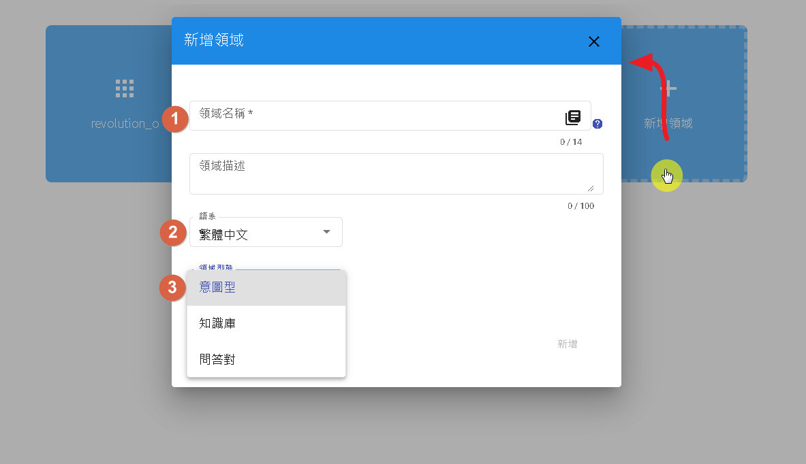
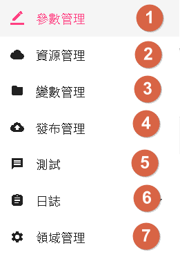
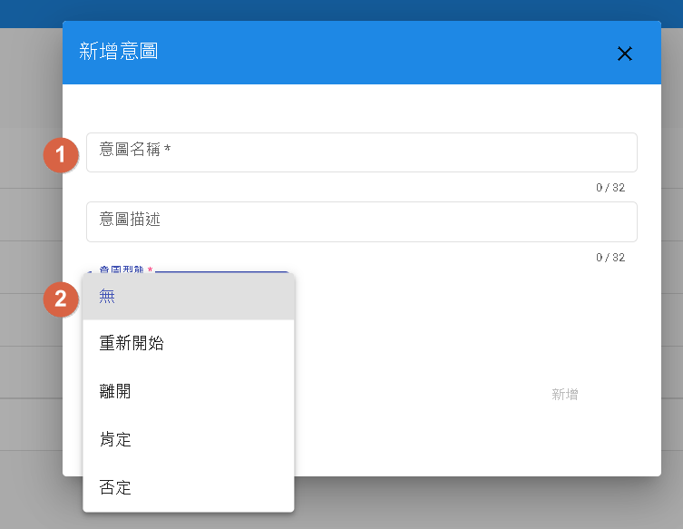
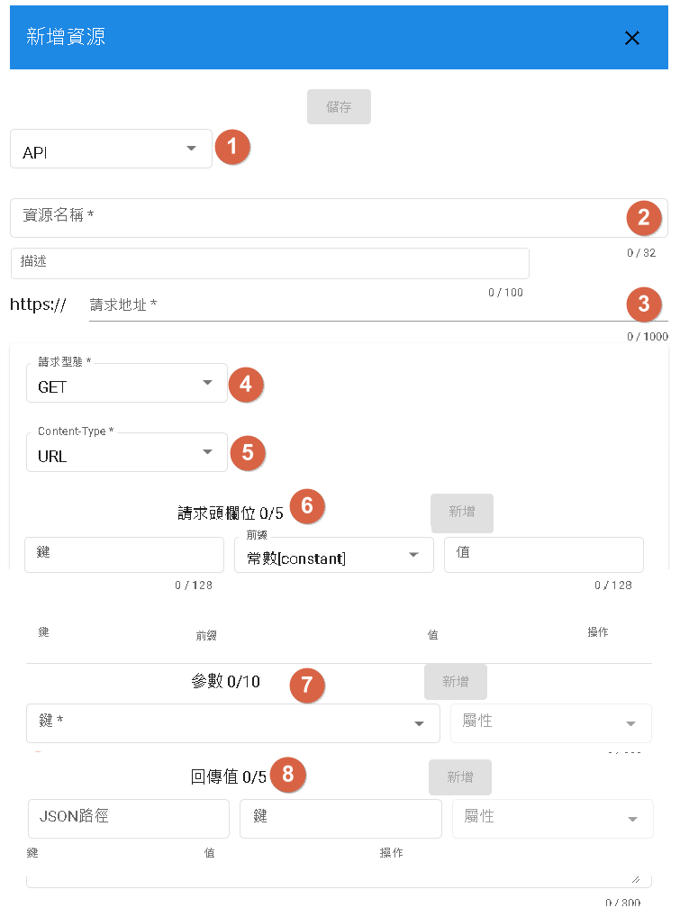
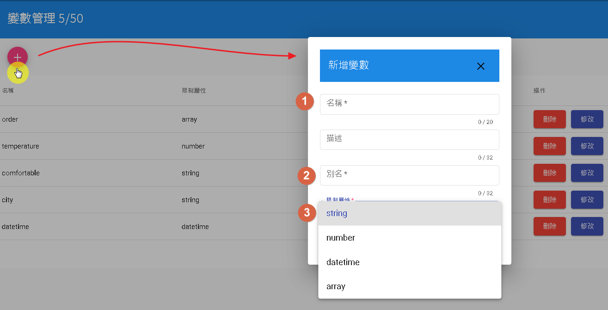
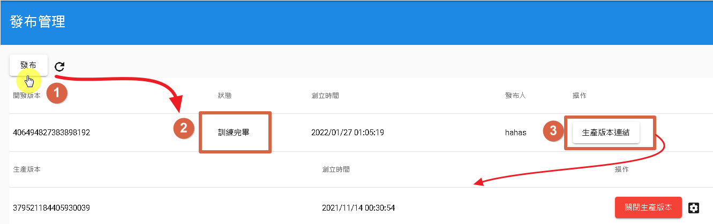
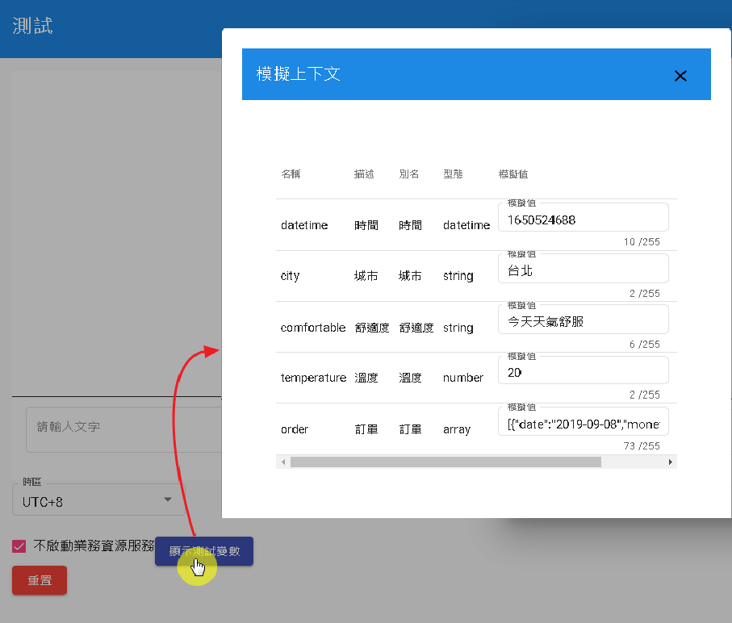

領域介紹
新增領域
- 點標[1]：輸入名稱，支援一到十四位小寫英文以及_(下划號)
- 點標[2]：支援語系，目前僅支援中文
- 點標[3]：領域型態分為"意圖型"、"知識庫"以及"問答對"。(註1)
註1：
- 意圖型：為判別意圖的型態
- 知識庫：根據知識庫-知識庫資料作回答
- 問答對：根據知識庫-問答對資料作回答

領域左欄位分別為參數管理、資源管理、變數管理、發布管理、測試、日誌以及領域管理。以下分別介紹。

參數管理
根據不同領域型態會出現不同的新增，如：新增意圖、新增問答對、新增知識庫。
新增意圖

- 點標[1]:填寫意圖名稱，支援一到三十二位小寫英文以及_(下划號)
- 點標[2]:意圖型態，分為無、重新開始、離開、肯定以及否定(註1)
註1:
- 無:為一般意圖型態，若沒特別用途一律選"無"。
- 重新開始:當命中此意圖時，會將當前詞槽清除，並重新提問。
- 離開:當命中此意圖，會跳開當前意圖。
- 肯定:用於"前置條件"中的確認節點。
- 否定:用於"前置條件"中的確認節點。
新增問答對
先從知識庫裡面，新增問答對即可連接，注意，連接後無法刪除，如果要刪除請直接刪除整個領域。
新增知識庫
先從知識庫裡面，新增知識庫即可連接，注意，連接後無法刪除，如果要刪除請直接刪除整個領域。
資源管理
資源用於連接外部API的設定。
新增資源

- 1.可選擇API或是SCRIPT，目前不支援SCRIPT(程式碼)
- 2.資源名稱，支援三十二位大小寫英文以及_(下划號)
- 3.API網址
- 4.請求型態可選擇GET或POST
- 5.Content-Type，GET可選擇URL，POST可選擇JSON或URL
- 6.API Header:HTTP 頭欄位，前綴分為constant(常數)、context(注入上下文)、entities(詞槽)以及config(全域參數)
- 7.參數，可以將"變數管理"的數值加入，並從意圖介紹注入。
- 8.回傳必須為JSON格式，並根據回傳值的格式，寫入JSON路徑，而"鍵"的來源在"變數管理"。
變數管理
用於參數注入，以及回傳值設定。意圖介紹中的"完成"->"呼叫資源"

- 1.名稱小寫英文以及_(下划號)最多二十個
- 2.別名：用於辨別此名稱
- 3.限制符號分為string(字串)、number(數字)、datetime(日期)以及array(陣列)
發布管理
點擊"發布"即可跳出狀態，狀態分為"訓練中"、"訓練完畢"以及"發生錯誤"(註1)，若要發布生產版本供機器人流程使用，則需點選"生產版本連結"。
狀態：
- 訓練中，當點選"發布時"的第一個狀態
- 訓練完畢，當訓練完成且可以進行測試的時候。
- 發生錯誤，當發生此訊息時，優先查看"警告"，若無法解決請聯絡客服處理。 
測試

可勾選"不啟動業務資源服務"，並設置該變數的數值。
日誌
歷史紀錄
用來記錄"生產版本"的對話內容。
根據不同領域型態會提供不同的標籤。
意圖型:
- all:顯示全部對話
- none:沒有標籤的對話
- isIntent:觸發意圖的對話
- slotFilled:正在填詞槽的對話
- fallback:沒有命中的對話。
知識庫:
- all:顯示全部對話
- none:沒有標籤的對話
- fallback:沒有命中的對話。
- fetchAll:命中知識庫"通用詞"
- notFound:有命中但沒找到任何實體。
- hasFilter:有搜尋到實體，並有過濾搜尋。
問答對:
- all:顯示全部對話
- none:沒有標籤的對話
- fallback:沒有命中的對話。